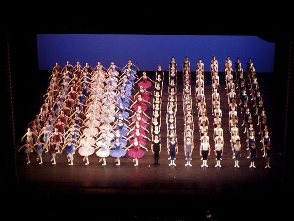
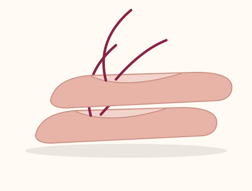
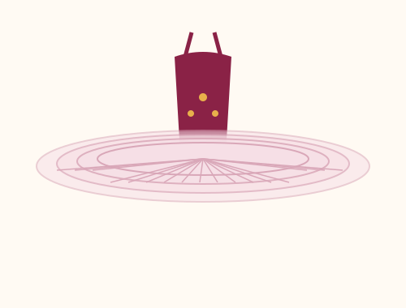

Галерея
Балерина, сцена, пуанты, балетный костюм и театры. Под каждой фотографией и рисунком есть ссылка для скачивания.
Фотографии

Скачать изображение

Скачать изображение

Скачать изображение

Скачать изображение

Скачать изображение

Скачать изображение
Рисунки
Скачать изображение
Скачать изображение

Скачать изображение

Скачать изображение
Скачать материалы

Источники фотографий
Все фотографии взяты с Викисклада (Wikimedia Commons) и используются по свободным лицензиям или находятся в общественном достоянии.
- Балерина в арабеске — Dascannell, CC BY-SA 4.0, Викисклад
- Поклон после спектакля — Scillystuff, CC BY-SA 3.0, Викисклад
- Пуанты — Keitei, CC BY 2.5, Викисклад
- Балетный костюм — northbaywanderer, CC BY-SA 2.0, Викисклад
- Анна Павлова, около 1905 — фотоателье Императорского Мариинского театра, общественное достояние, Викисклад
- Галина Уланова, 1968 — Jack de Nijs / Anefo, CC BY-SA 3.0 NL, Викисклад
- Майя Плисецкая, 1974 — автор неизвестен, общественное достояние, Викисклад
- Агриппина Ваганова — Эсмеральда, 1910 — автор неизвестен, общественное достояние, Викисклад
- Большой театр — DmitriyGuryanov, CC BY-SA 3.0, Викисклад
- Мариинский театр — Jaimrsilva, CC BY-SA 4.0, Викисклад
- Парижская опера (Дворец Гарнье) — Thomas Oboe Lee, CC BY-SA 4.0, Викисклад
- Королевский театр Ковент-Гарден — Gordon Beach, CC BY-SA 2.0, Викисклад